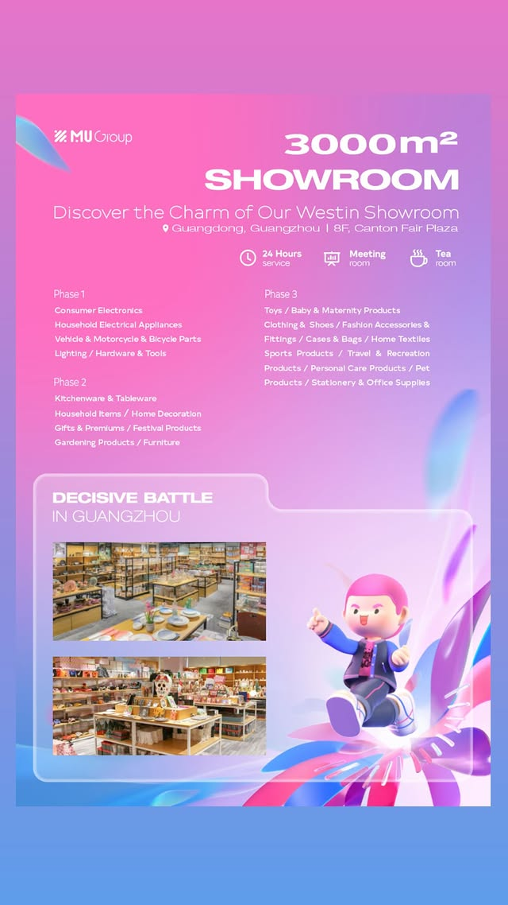

Fast route map for Canton Fair buyers
Before arrival: choose the correct phase, pre-register through official Canton Fair channels, prepare a product brief and book meetings.
In Guangzhou: collect evidence at the booth, not only business cards. Record booth number, supplier identity, product model, price basis, MOQ, sample terms, packing and lead time.
After the fair: send your supplier list and product photos to ROYAL UNION. We can arrange Guangzhou-side support by appointment and continue China sourcing follow-up through Yiwu or other supplier routes when it fits the project.
Guangzhou onsite support · Canton Fair Plaza
Need guidance in Guangzhou? Meet our team around the Canton Fair route.
During the Canton Fair period, MU Group promotes a 3,000 m² Guangzhou showroom at 8F, Canton Fair Plaza. Overseas buyers can contact ROYAL UNION before arrival so we can help arrange a sourcing discussion, review supplier notes and connect Guangzhou discovery with Yiwu follow-up.
- Support by appointment: Guangzhou colleague coordination, meeting-room discussion and follow-up plan.
- Buyer-friendly facilities: 24-hour service, meeting room and tea room as shown in the Guangzhou showroom notice.
- Best fit: retailers, importers, e-commerce sellers, brands and distributors visiting Canton Fair.

Showroom category route by Canton Fair phase
- Phase 1: consumer electronics, household electrical appliances, vehicle, motorcycle and bicycle parts, lighting, hardware and tools.
- Phase 2: kitchenware and tableware, household items, home decoration, gifts and premiums, festival products, gardening products and furniture.
- Phase 3: toys, baby and maternity products, clothing and shoes, fashion accessories, cases and bags, home textiles, sports and travel products, personal care, pet products, stationery and office supplies.
Official 140th Canton Fair dates and product phases
The official schedule for the 140th Canton Fair lists three onsite phases in Guangzhou: Phase 1, October 15–19, 2026; Phase 2, October 23–27, 2026; and Phase 3, October 31–November 4, 2026. The intervals are October 20–22 and October 28–30.
Guangzhou arrival route: airport, train station and fair complex
For most overseas buyers, the practical route is: arrive in Guangzhou, collect or confirm your buyer badge through official channels, go to the Canton Fair Complex in Pazhou, record supplier evidence, then review the shortlist with a sourcing partner before placing any order.
The buyer route inside the fair: do not let the hall control your day
The fair is large. First-time visitors can lose a day walking without a procurement result. A better route is to divide each day into four blocks:
- Priority booth meetings. Start with suppliers already matched to your product brief.
- Category scan. Walk the relevant halls to collect alternative products and price references.
- Same-day evidence review. Clean photos, booth numbers, contact names and product notes before leaving the complex.
- Follow-up assignment. Decide which suppliers need quotation confirmation, samples, factory check, Yiwu comparison or consolidation planning.
Where ROYAL UNION can help in Guangzhou
If you need guidance during the Canton Fair, contact ROYAL UNION before you arrive. When scheduled in advance, we can coordinate colleagues in Guangzhou to help overseas buyers organize the route, clarify supplier meeting records and prepare follow-up. This is especially helpful if you are a retailer, importer, e-commerce seller, brand owner or distributor trying to compare multiple categories in a short visit.
We are not the official registration office and we do not replace Canton Fair official services. We help with the commercial sourcing side: product brief, supplier comparison, quotation follow-up, sample coordination, quality-control planning, warehouse receiving, multi-supplier consolidation and export preparation.
After Guangzhou: connect the Canton Fair with Yiwu sourcing
Many buyers discover products in Guangzhou but still need price comparison, alternative suppliers, smaller mixed-category options or ongoing China-side order control. This is where Yiwu sourcing can connect with the Canton Fair route.
Send us your fair notes, supplier contacts, product photos and target order plan. ROYAL UNION can help organize the list, compare fair exhibitors with suitable Yiwu or China suppliers, confirm samples and create a single order-control record. The goal is to avoid scattered WeChat messages, unclear versions, missing carton data and rushed deposits.
Coming to Canton Fair? Ask for Guangzhou guidance
Send your phase, arrival date, product category, target quantity and whether you need Guangzhou booth guidance, factory visit follow-up or Yiwu sourcing after the fair.
Buyer questions
Can ROYAL UNION guide me at the Canton Fair in Guangzhou?
When arranged in advance, we can coordinate Guangzhou-side colleagues to help with route guidance, supplier meeting records and sourcing follow-up. Availability depends on phase, schedule, meeting location and project scope.
Which phase should I visit for furniture, gifts and household products?
Phase 2 is usually the key phase for home life categories such as household items, kitchenware, gardening, gifts, festival products, building materials, sanitary and bathroom equipment and furniture. Confirm the latest official directory before travel.
Should I place an order directly at the booth?
Usually, do not rush. Use the booth to collect information, then confirm quotation, product version, sample, packaging, lead time, payment terms and quality checks in writing.
Can ROYAL UNION continue the project after I leave Guangzhou?
Yes, subject to agreed scope. We can help organize supplier follow-up, compare Yiwu or China supplier options, coordinate samples, support order control, receive goods, consolidate and prepare export handover.
Official 140th Canton Fair dates, sectors and overseas-buyer service information were checked against Canton Fair / MOFCOM-published official information on October 6, 2026. Travel, badge and hall arrangements may change; confirm them with official Canton Fair channels. ROYAL UNION is an independent China sourcing and supply-chain partner under MU Group, not an official Canton Fair registration agent.